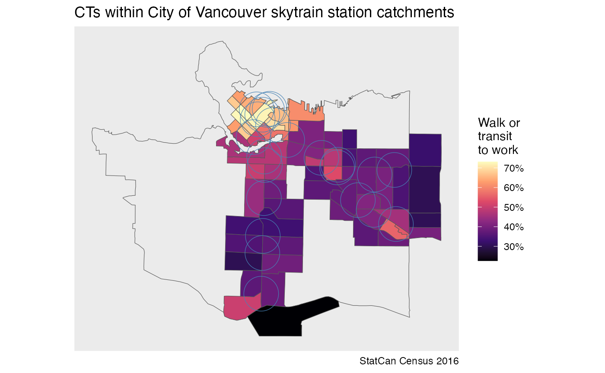
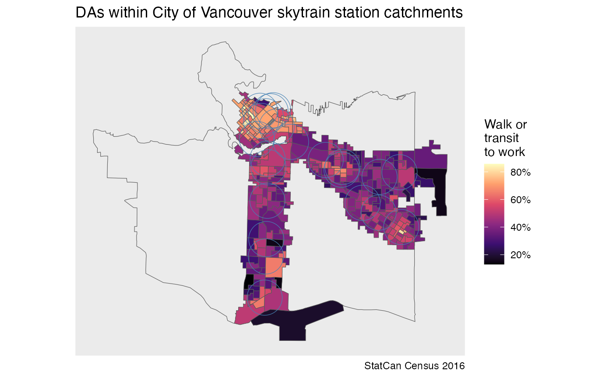
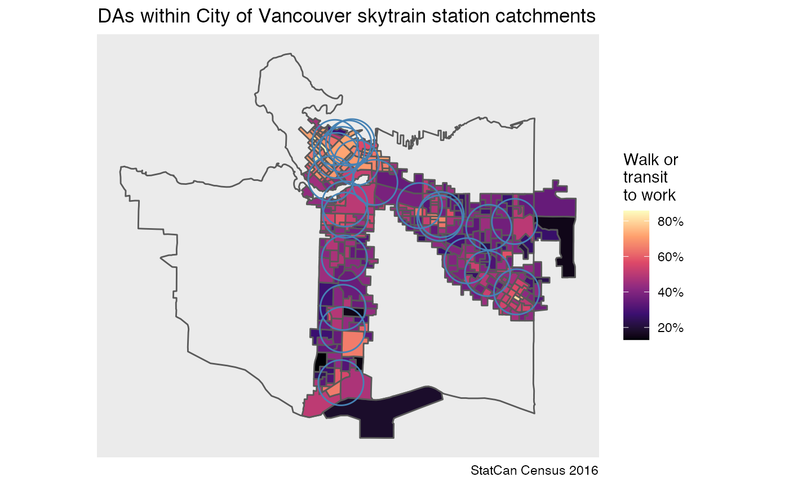

vignettes/intersecting_geometries.Rmd
intersecting_geometries.RmdA frequent application of census data is to evaluate values for specific areas that do not necessarily correspond to existing boundaries or administrative units. Census users may have their own defined geographies or other geospatial data of interest and want to be able to quickly and easily identify the collection of census features that correspond to that region.
The get_intersecting_geometries() function is projection
agnostic and accepts any valid sf or sfc class
object as input. These objects are then reprojected into lat/lon
coordinates on the backend to facilitate the intersecting join on the
server-side.
As an example, suppose we are interested in understanding the housing
tenure split in census tracts located near Vancouver Skytrain (rapid
transit) stations. We can use the COV_SKYTRAIN_STATIONS
dataset that ships with the package and is derived from the City
of Vancouver Open Data portal and contains their locations. For our
example we are interested in census tracts within 800m of these
stations, which ships with the package.
We load the example data COV_SKYTRAIN_STATIONS from the
package.
cov_station_buffers <- COV_SKYTRAIN_STATIONS %>%
st_set_crs(4326) # needed for Ubuntu or systems with old GDAL but can otherwise be ignoredWe then use the get_intersecting_geometries call to
obtain the list of municipalities (CSDs) and census tracts (CTs) that
intersect the 800m station buffer objects.
station_city_ids <- get_intersecting_geometries("CA16", level = "CSD", geometry = cov_station_buffers,
quiet=TRUE)
station_ct_ids <- get_intersecting_geometries("CA16", level = "CT", geometry = cov_station_buffers,
quiet=TRUE)These return a list of census geographic identifiers suitable for use
in the ‘region’ argument in get_census. We may be
interested in the transit to work mode share in each of these
buffers.
variables <- c(mode_base="v_CA16_5792",transit="v_CA16_5801",walk="v_CA16_5804")
station_city <- get_census("CA16", regions = station_city_ids, vectors = variables,
geo_format = 'sf', quiet=TRUE) %>%
filter(name == "Vancouver (CY)")
station_cts <- get_census("CA16", regions = station_ct_ids, vectors = variables,
geo_format = 'sf', quiet=TRUE)To understand how these relate we plot the data.
ggplot(station_city) +
geom_sf(fill=NA) +
geom_sf(data=station_cts,aes(fill=((walk+transit)/mode_base))) +
geom_sf(data=cov_station_buffers,fill=NA,alpha=0.5,color="steelblue") +
scale_fill_viridis_c(option="magma",labels=scales::percent) +
coord_sf(datum=NA) +
labs(title="CTs within City of Vancouver skytrain station catchments",
fill="Walk or\ntransit\nto work",
caption="StatCan Census 2016")
To get a closer match we can cut out the dissemination areas intersecting the station catchment areas.
station_das <- get_intersecting_geometries("CA16", level = "DA", geometry = cov_station_buffers,
quiet=TRUE) %>%
get_census("CA16", regions = ., vectors=variables, geo_format = 'sf', quiet=TRUE)
ggplot(station_city) +
geom_sf(fill=NA) +
geom_sf(data=station_das,aes(fill=((walk+transit)/mode_base))) +
geom_sf(data=cov_station_buffers,fill=NA,alpha=0.5,color="steelblue") +
scale_fill_viridis_c(option="magma",labels=scales::percent) +
coord_sf(datum=NA) +
labs(title="DAs within City of Vancouver skytrain station catchments",
fill="Walk or\ntransit\nto work",
caption="StatCan Census 2016")
However, API points for get_intersecting_geometries are
quite limited at this point, an alternative way to obtain the same data
is to first query all DAs withing the CTs identified by the previous
get_intersecting_geometries call and then filter down to
those intersecting the station buffers.
station_das2 <- get_census("CA16", regions = station_ct_ids, vectors=variables,
geo_format = 'sf', level="DA", quiet=TRUE) %>%
sf::st_filter(cov_station_buffers)
ggplot(station_city) +
geom_sf(fill=NA) +
geom_sf(data=station_das2,aes(fill=((walk+transit)/mode_base))) +
geom_sf(data=cov_station_buffers,fill=NA,alpha=0.5,color="steelblue") +
scale_fill_viridis_c(option="magma",labels=scales::percent) +
coord_sf(datum=NA) +
labs(title="DAs within City of Vancouver skytrain station catchments",
fill="Walk or\ntransit\nto work",
caption="StatCan Census 2016")
We may increase the default quotas for the
get_intersecting_geometries call at some point, but while
we throttling API usage and monitor server impacts of the new
functionality it may be preferable to use the
get_intersecting_geometries call for higher level
geographies only and add a few lines of code to do the final bit of
filtering in R.
We may take this further by estimate values of census variables
strictly within catchments areas. Rather than intersecting, some
adjustments for spatial disaggregation and interpolation are needed. The
tongfen_estimate method from the tongfen
package is useful in this case. This is a related package that is
designed to work in tandem with cancensus in order to
facilitate census geography aggregation and is designed to make census
data comparable across several censuses.